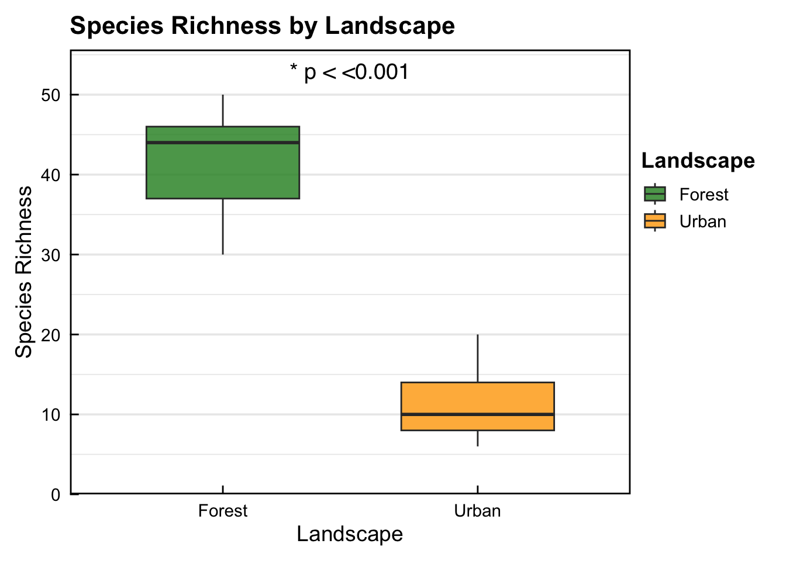
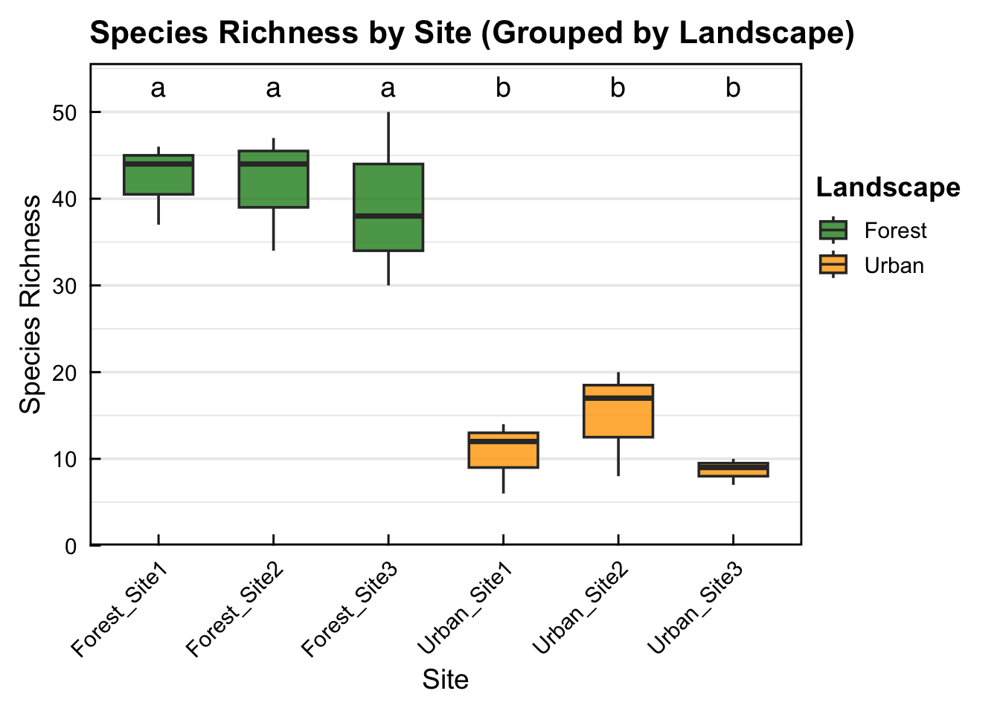
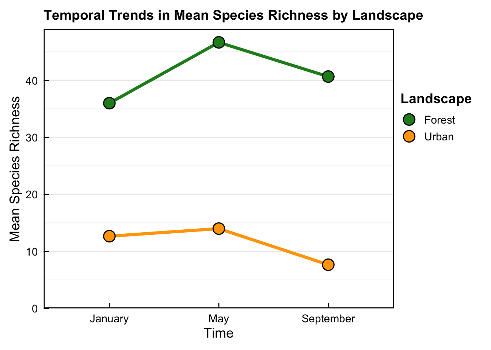
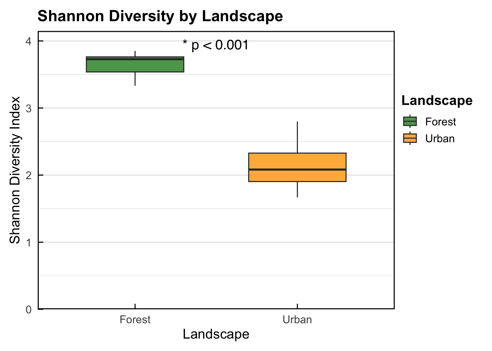

# Set the workspace to the current working directory
#setwd('path_to_your_folder')
#setwd('/Users/ryannewis/Documents/GitHub/Repositories/Richness_diversity/notebooks')
1 Calculating and Visualising Species Richness and Shannon Diversity for Ecological Survey Data
Author details: Dr Ryan Newis
Editor details: Xiang Zhao
Contact details: support@ecocommons.org.au
Copyright statement: This script is the product of the EcoCommons platform. Please refer to the EcoCommons website for more details: https://www.ecocommons.org.au/
Date: June 2025
2 Script and Data Information
This notebook, developed by the EcoCommons team, showcases how to calculate, analyse and compare species richness and species diversity (Shannon) across different landscapes and sites for bird survey data. This method can be applied to other animals, plants or biological communities that use a similar surveying method.

Pale-headed Rosella - Platycercus adscitus: Photographer: Chris Murray
3 Introduction
Understanding how to calculate species richness and Shannon diversity is essential for assessing baseline biodiversity in ecological studies (Hill 1973; Gotelli and Colwell 2001; Chao and Chiu 2016). These metrics provide valuable insights into both the number of species present (richness) and the evenness of species distribution (Shannon diversity), helping ecologists monitor ecosystem health, detect changes over time, and inform conservation and management decisions.
4 Key Concepts
4.1 K.1 Species richness
Species richness is a fundamental measure of biodiversity, reflecting the total number of species within a defined area or ecological community. It serves as a key indicator of habitat complexity and ecosystem health, providing a baseline for understanding patterns of species distribution and the potential effects of environmental change (Gotelli & Colwell 2001; Gotelli et al. 2009).
4.2 K.2 Shannon diversity
Shannon diversity (also known as the Shannon-Wiener Index) integrates both species richness and the relative abundance of each species within a community. It provides a quantitative measure of biodiversity that accounts for species evenness, offering deeper insights into community structure and the dominance or rarity of species across ecological gradients (Shannon 1948; Hill 1973; Magurran 2004).
4.3 K.3 Landscape comparisons in ecology
Landscape-level comparisons allow ecologists to assess how species assemblages and biodiversity metrics vary across different environmental contexts. By comparing landscapes — such as forests and urban areas — researchers can identify the influence of habitat type, land-use change, and human disturbance on ecological communities. These comparisons are critical for understanding patterns of biodiversity loss, informing conservation priorities, and guiding land management strategies aimed at maintaining ecosystem integrity (Turner 1989; Turner 2001; Fahrig 2003).
5 Objectives
- Learn how to prepare datasets for species richness and Shannon diversity calculations.
- Learn how to calculate, statistically compare, and visualise species richness.
- Learn how to calculate, statistically compare, and visualise Shannon diversity.
6 Workflow Overview
- Step 1: Set-up - Install and load required R packages (libraries)
- Step 2: Loading and preparing data
- Step 3: Species richness calculations, comparisons, and visualisations
- Step 4: Shannon diversity calculations, comparisons, and visualisations
In the near future, this material may form part of comprehensive support materials available to EcoCommons users. If you have any corrections or suggestions to improve the efficiency, please contact the EcoCommons team.

7 Step 1: Set-up R environment and packages
Some housekeeping before we start. This process might take some time as multiple packages may need to be installed.
7.1 1.1 Set the working directory and create a folder for data.
Save the Quarto Markdown file (.QMD) to a folder of your choice, and then set the path to your folder as your working directory.
Now your local working drive is set.
7.2 1.2 Install and load required packages
Install and load R packages and libraries.
# Install and load required packages (if not already installed)
required_packages <- c(
"ggplot2",
"vegan",
"tidyr",
"dplyr",
"multcompView",
"lme4",
"lmerTest",
"emmeans",
"stringr"
)
# Identify missing packages
missing_packages <- required_packages[!(required_packages %in% installed.packages()[,"Package"])]
# Install only missing packages
if (length(missing_packages) > 0) {
install.packages(missing_packages)
}
# Load all required packages
lapply(required_packages, library, character.only = TRUE)[[1]]
[1] "ggplot2" "stats" "graphics" "grDevices" "utils" "datasets"
[7] "methods" "base"
[[2]]
[1] "vegan" "permute" "ggplot2" "stats" "graphics" "grDevices"
[7] "utils" "datasets" "methods" "base"
[[3]]
[1] "tidyr" "vegan" "permute" "ggplot2" "stats" "graphics"
[7] "grDevices" "utils" "datasets" "methods" "base"
[[4]]
[1] "dplyr" "tidyr" "vegan" "permute" "ggplot2" "stats"
[7] "graphics" "grDevices" "utils" "datasets" "methods" "base"
[[5]]
[1] "multcompView" "dplyr" "tidyr" "vegan" "permute"
[6] "ggplot2" "stats" "graphics" "grDevices" "utils"
[11] "datasets" "methods" "base"
[[6]]
[1] "lme4" "Matrix" "multcompView" "dplyr" "tidyr"
[6] "vegan" "permute" "ggplot2" "stats" "graphics"
[11] "grDevices" "utils" "datasets" "methods" "base"
[[7]]
[1] "lmerTest" "lme4" "Matrix" "multcompView" "dplyr"
[6] "tidyr" "vegan" "permute" "ggplot2" "stats"
[11] "graphics" "grDevices" "utils" "datasets" "methods"
[16] "base"
[[8]]
[1] "emmeans" "lmerTest" "lme4" "Matrix" "multcompView"
[6] "dplyr" "tidyr" "vegan" "permute" "ggplot2"
[11] "stats" "graphics" "grDevices" "utils" "datasets"
[16] "methods" "base"
[[9]]
[1] "stringr" "emmeans" "lmerTest" "lme4" "Matrix"
[6] "multcompView" "dplyr" "tidyr" "vegan" "permute"
[11] "ggplot2" "stats" "graphics" "grDevices" "utils"
[16] "datasets" "methods" "base" Now all required packages have been installed and loaded.
8 Step 2: Downloading and preparing data
If you’re using your own bird survey data, here’s how to prepare it. The analysis in this notebook expects your data to initially be structured as a “long format” CSV file (see Table 1 for example.).
Table 1. Expected data structure (long format): Each row should represent one observation of species abundance at a specific study site and time, e.g. :
| Site | Time | Landscape | Species | Abundance |
|---|---|---|---|---|
| Forest_Site1 | January | Forest | Bird A | 23 |
| Forest_Site2 | January | Forest | Bird B | 11 |
| Urban_Site1 | January | Urban | Bird A | 5 |
| Urban_Site2 | January | Urban | Bird B | 9 |
Column names must be exactly: “Site”, “Time”, “Landscape”, “Species”, “Abundance” to work directly with the code in this notebook. This notebook will automatically convert the long-format data to wide format when needed (e.g., for diversity index calculations).
The image below depicts the study design for the example bird survey used in this notebook workflow. The design incorporates and compares 2 contrasting landscapes: Forest and Urban. Each landscape has 3 sites in which bird surveys were conducted.

Now we will load in the CSV data file (in long format) and check the data structure.
- Replace “example_birdsurvey_data.csv” with the actual path to your file when doing analysis of your own data
# Load example dataset from EcoCommons GitHub
your_data <- read.csv("https://raw.githubusercontent.com/EcoCommonsAustralia/notebooks/Richness_diversity/notebooks/example_birdsurvey_data.csv")
#If you want to download a copy of the dataset to your local computer use the code below. Today we will just be calling the dataset which will remain in in the R environment for the session.
# download.file(
# "https://raw.githubusercontent.com/EcoCommonsAustralia/notebooks/Richness_diversity/notebooks/example_birdsurvey_data.csv")
#Then you would load the data directly from your local drive
#your_data <- read.csv("example_birdsurvey_data.csv", stringsAsFactors = FALSE)
#Alternatively can save this dataset locally by running this line at any time
#write.csv(your_data, "example_birdsurvey_data.csv", row.names = FALSE)
# Check the data structure
str(your_data)'data.frame': 473 obs. of 6 variables:
$ Site : chr "Forest_Site1" "Forest_Site1" "Forest_Site1" "Forest_Site1" ...
$ Time : chr "January" "January" "January" "January" ...
$ Landscape: chr "Forest" "Forest" "Forest" "Forest" ...
$ Species : chr "Bird 10" "Bird 11" "Bird 12" "Bird 13" ...
$ Abundance: int 135 118 71 84 83 138 62 159 99 170 ...
$ SiteTime : chr "Forest_Site1_January" "Forest_Site1_January" "Forest_Site1_January" "Forest_Site1_January" ...#head(your_data)
# Ensure your required columns are present
required_cols <- c("Site", "Time", "Landscape", "Species", "Abundance")
if (!all(required_cols %in% colnames(your_data))) {
stop("Your data must contain the following columns: Site, Time, Landscape, Species, Abundance")
}
# Check for missing values
summary(your_data) Site Time Landscape Species
Length:473 Length:473 Length:473 Length:473
Class :character Class :character Class :character Class :character
Mode :character Mode :character Mode :character Mode :character
Abundance SiteTime
Min. : 2.0 Length:473
1st Qu.: 68.0 Class :character
Median :104.0 Mode :character
Mean :107.8
3rd Qu.:153.0
Max. :200.0 if (anyNA(your_data)) warning("Your data contains missing values. Please clean it before proceeding.")
# Once you are happy with your dataset, reassign the variable name to species_data and continue with the rest of the notebook
species_data <- your_data- Check that the dataset you have uploaded is correct (e.g. number of observations, variable names).
9 Step 3: Species richness
This section will deal with Species richness calculations, comparisons and visualisations
9.1 3.1 Check data structure before calculating species richness
species_summary <- species_data %>%
filter(!is.na(Species)) %>%
group_by(Site, Time, Landscape, Species) %>%
summarise(Abundance = sum(Abundance), .groups = "drop") %>%
mutate(SiteTime = paste(Site, Time, sep = "_"))
#str(species_summary)
head(species_summary)# A tibble: 6 × 6
Site Time Landscape Species Abundance SiteTime
<chr> <chr> <chr> <chr> <int> <chr>
1 Forest_Site1 January Forest Bird 10 135 Forest_Site1_January
2 Forest_Site1 January Forest Bird 11 118 Forest_Site1_January
3 Forest_Site1 January Forest Bird 12 71 Forest_Site1_January
4 Forest_Site1 January Forest Bird 13 84 Forest_Site1_January
5 Forest_Site1 January Forest Bird 14 83 Forest_Site1_January
6 Forest_Site1 January Forest Bird 15 138 Forest_Site1_January- Check that your data is in the correct structure, as above. Note that the code block also added a column labelled SiteTime, as this will be a valuable variable for downstream analysis.
9.2 3.2 Pivot data to wide format and to do species richness calculations
# Convert long format-data to wide format
abundance_wide <- pivot_wider(
species_summary,
id_cols = c(Site, Time, Landscape, SiteTime),
names_from = Species,
values_from = Abundance,
values_fill = 0
)
#Reorder abundance-widedata-frame for user-friendly table view
# Find all species columns (starting with "Bird ")
species_cols <- names(abundance_wide)[grepl("^Bird \\d+$", names(abundance_wide))]
# Sort them numerically based on the number after "Bird "
species_cols_sorted <- species_cols[order(as.numeric(str_extract(species_cols, "\\d+")))]
# Relocate species columns in proper numeric order
abundance_wide <- abundance_wide %>%
relocate(all_of(species_cols_sorted), .after = SiteTime)
# View wide format summary table
#str(abundance_wide)
head(abundance_wide)# A tibble: 6 × 54
Site Time Landscape SiteTime `Bird 1` `Bird 2` `Bird 3` `Bird 4` `Bird 5`
<chr> <chr> <chr> <chr> <int> <int> <int> <int> <int>
1 Forest_… Janu… Forest Forest_… 0 0 118 83 70
2 Forest_… May Forest Forest_… 137 78 143 145 55
3 Forest_… Sept… Forest Forest_… 0 188 0 58 179
4 Forest_… Janu… Forest Forest_… 0 0 0 85 95
5 Forest_… May Forest Forest_… 128 113 116 94 73
6 Forest_… Sept… Forest Forest_… 97 76 101 125 86
# ℹ 45 more variables: `Bird 6` <int>, `Bird 7` <int>, `Bird 8` <int>,
# `Bird 9` <int>, `Bird 10` <int>, `Bird 11` <int>, `Bird 12` <int>,
# `Bird 13` <int>, `Bird 14` <int>, `Bird 15` <int>, `Bird 16` <int>,
# `Bird 17` <int>, `Bird 18` <int>, `Bird 19` <int>, `Bird 20` <int>,
# `Bird 21` <int>, `Bird 22` <int>, `Bird 23` <int>, `Bird 24` <int>,
# `Bird 25` <int>, `Bird 26` <int>, `Bird 27` <int>, `Bird 28` <int>,
# `Bird 29` <int>, `Bird 30` <int>, `Bird 31` <int>, `Bird 32` <int>, …- Check that the wide-pivoted dataset is correct.
9.3 3.3 Species richness calculations
Calculate bird species richness for each sampling event in each site and landscape
richness_df <- abundance_wide %>%
mutate(Species_Richness = apply(select(., starts_with("Bird")), 1, function(x) sum(x > 0))) %>%
select(Site, Time, Landscape, SiteTime, Species_Richness)
#str(richness_df)
head(richness_df)# A tibble: 6 × 5
Site Time Landscape SiteTime Species_Richness
<chr> <chr> <chr> <chr> <int>
1 Forest_Site1 January Forest Forest_Site1_January 44
2 Forest_Site1 May Forest Forest_Site1_May 46
3 Forest_Site1 September Forest Forest_Site1_September 37
4 Forest_Site2 January Forest Forest_Site2_January 34
5 Forest_Site2 May Forest Forest_Site2_May 44
6 Forest_Site2 September Forest Forest_Site2_September 47- Checking each row of species ricnness calculations has been completed correctly.
9.4 3.4 Species richness statistical comparisons by landscape
Descriptive summary for Forest and Urban landscape bird species richness.
landscape_summary <- richness_df %>%
group_by(Landscape) %>%
summarise(
Mean = mean(Species_Richness),
SD = sd(Species_Richness),
SE = SD / sqrt(n())
)
print(landscape_summary)# A tibble: 2 × 4
Landscape Mean SD SE
<chr> <dbl> <dbl> <dbl>
1 Forest 41.1 6.66 2.22
2 Urban 11.4 4.75 1.58- The descriptive summary shows that the Forest landscape (41.11) has a higher mean species richness of birds compared to the Urban landscape (11.44). But we still need to run a statistical test to check for significance.
t_test_landscape_richness <- t.test(Species_Richness ~ Landscape, data = richness_df)
print(t_test_landscape_richness)
Welch Two Sample t-test
data: Species_Richness by Landscape
t = 10.882, df = 14.459, p-value = 2.354e-08
alternative hypothesis: true difference in means between group Forest and group Urban is not equal to 0
95 percent confidence interval:
23.83696 35.49638
sample estimates:
mean in group Forest mean in group Urban
41.11111 11.44444 - The result of the t-test shows that the Forest landscape (41.11) has significantly higher bird species richness compared to the Urban landscape (11.44) (p < 0.0001).
9.5 3.4 Plot species richness by landscape
p_val <- t_test_landscape_richness$p.value
p_label <- paste0("* p < ", format.pval(p_val, digits = 3, eps = .001)) # → * p < 0.001 style
y_max_rich <- max(richness_df$Species_Richness)
y_breaks_rich <- pretty(c(0, y_max_rich))
y_breaks_rich <- y_breaks_rich[y_breaks_rich >= 0]
ggplot(richness_df, aes(x = Landscape, y = Species_Richness, fill = Landscape)) +
geom_boxplot(
alpha = 0.8,
width = 0.6,
outlier.shape = 21,
outlier.size = 2.5,
outlier.stroke = 0.4,
outlier.colour = "black"
) +
annotate(
"text",
x = 1.5,
y = max(richness_df$Species_Richness) + 3,
label = p_label,
size = 5,
family = "sans"
) +
scale_fill_manual(values = c("Forest" = "#228B22", "Urban" = "#FFA500")) +
scale_y_continuous(
breaks = y_breaks_rich,
labels = function(b) { as.character(b) },
expand = expansion(mult = c(0, 0.05)),
limits = c(0, NA)
) +
labs(
title = "Species Richness by Landscape",
x = "Landscape",
y = "Species Richness",
fill = "Landscape"
) +
theme_minimal(base_size = 14) +
theme(
axis.ticks.length = unit(-0.2, "cm"),
axis.ticks = element_line(color = "black", linewidth = 0.5),
axis.text.x = element_text(color = "black", margin = margin(t = 6)),
axis.text.y = element_text(color = "black", margin = margin(r = 6)),
panel.grid.major.x = element_blank(),
legend.position = c(1, 0.8),
legend.justification = c("left", "top"),
legend.box.just = "left",
legend.background = element_blank(),
legend.title = element_text(face = "bold"),
plot.title = element_text(face = "bold", size = 16),
plot.subtitle = element_text(size = 13),
panel.border = element_rect(color = "black", fill = NA, linewidth = 1),
plot.margin = margin(10, 100, 10, 10)
) +
guides(fill = guide_legend(title.position = "top"))
- Box-plot showing that the Forest landscape (41.11) has significantly higher bird species richness compared to the Urban landscape (11.44) (p < 0.0001).
9.6 3.5 Species richness statistical comparisons by site
Calculate descriptive statistics for each site within each landscape.
# Descriptive statistics for species richness by site
site_summary_richness <- richness_df %>%
group_by(Landscape, Site) %>%
summarise(
Mean = mean(Species_Richness),
SD = sd(Species_Richness),
SE = SD / sqrt(n())
)
print(site_summary_richness)# A tibble: 6 × 5
# Groups: Landscape [2]
Landscape Site Mean SD SE
<chr> <chr> <dbl> <dbl> <dbl>
1 Forest Forest_Site1 42.3 4.73 2.73
2 Forest Forest_Site2 41.7 6.81 3.93
3 Forest Forest_Site3 39.3 10.1 5.81
4 Urban Urban_Site1 10.7 4.16 2.40
5 Urban Urban_Site2 15 6.24 3.61
6 Urban Urban_Site3 8.67 1.53 0.882- The descriptive summary of mean species richness for sites shows that all 3 forest sites are higher than the 3 Urban sites. But we still need to run a statistical test to check for significance
Conduct an ANOVA with Tukey’s post-hoc test to identify any significant differences in species richness between sites and where differences occur.
# ANOVA to test for significant differences in sites within landscapes
anova_nested <- aov(Species_Richness ~ Landscape + Site %in% Landscape, data = richness_df) # TODO These is no sig dif within sites, so should probs not run the ANOVA/Tukey below - but it does provide us with the letters for the plot
summary(anova_nested) Df Sum Sq Mean Sq F value Pr(>F)
Landscape 1 3960 3960 103.92 2.91e-07 ***
Landscape:Site 4 78 19 0.51 0.73
Residuals 12 457 38
---
Signif. codes: 0 '***' 0.001 '**' 0.01 '*' 0.05 '.' 0.1 ' ' 1# ANOVA to test for significant differences between all sites across both landscapes (# TODO Check this is valid)
anova_all_sites <- aov(Species_Richness ~ Site, data = richness_df)
#Tukey's post-hoc to show where significant differences are between sites
tukey_all_sites <- TukeyHSD(anova_all_sites)
tukey_all_sites$Site diff lwr upr p adj
Forest_Site2-Forest_Site1 -0.6666667 -17.59756 16.264230 0.9999925867
Forest_Site3-Forest_Site1 -3.0000000 -19.93090 13.930896 0.9894045692
Urban_Site1-Forest_Site1 -31.6666667 -48.59756 -14.735770 0.0004486064
Urban_Site2-Forest_Site1 -27.3333333 -44.26423 -10.402437 0.0016515087
Urban_Site3-Forest_Site1 -33.6666667 -50.59756 -16.735770 0.0002533679
Forest_Site3-Forest_Site2 -2.3333333 -19.26423 14.597563 0.9966532647
Urban_Site1-Forest_Site2 -31.0000000 -47.93090 -14.069104 0.0005450276
Urban_Site2-Forest_Site2 -26.6666667 -43.59756 -9.735770 0.0020339095
Urban_Site3-Forest_Site2 -33.0000000 -49.93090 -16.069104 0.0003058685
Urban_Site1-Forest_Site3 -28.6666667 -45.59756 -11.735770 0.0010955258
Urban_Site2-Forest_Site3 -24.3333333 -41.26423 -7.402437 0.0042799488
Urban_Site3-Forest_Site3 -30.6666667 -47.59756 -13.735770 0.0006012322
Urban_Site2-Urban_Site1 4.3333333 -12.59756 21.264230 0.9492760475
Urban_Site3-Urban_Site1 -2.0000000 -18.93090 14.930896 0.9983833589
Urban_Site3-Urban_Site2 -6.3333333 -23.26423 10.597563 0.8018091487- ANOVA results show a significant difference in landscape Shannon diversity but not sites within landscape. Further, output form the Tukey post-hoc test shows that there is significantly higher bird species richness in all Forest sites compared to all Urban sites. However, there is no significant difference in bird species richness between sites within the same landscape. Check table for exact significance levels for pairwise comparisons.
9.7 3.6 Plot species richness by site
letters_df <- multcompView::multcompLetters4(anova_all_sites, tukey_all_sites)
site_letters <- data.frame(Site = names(letters_df$Site$Letters),
Letters = letters_df$Site$Letters)
richness_df <- left_join(richness_df, site_letters, by = "Site")
y_max_rich <- max(richness_df$Species_Richness)
y_breaks_rich <- pretty(c(0, y_max_rich))
y_breaks_rich <- y_breaks_rich[y_breaks_rich >= 0]
ggplot(richness_df, aes(x = Site, y = Species_Richness, fill = Landscape)) +
geom_boxplot(
alpha = 0.8,
width = 0.6,
outlier.shape = 21,
outlier.size = 2.5,
outlier.stroke = 0.4,
outlier.colour = "black"
) +
geom_text(
data = site_letters,
aes(x = Site, y = max(richness_df$Species_Richness) + 3, label = Letters),
inherit.aes = FALSE,
size = 5,
family = "sans"
) +
scale_fill_manual(values = c("Forest" = "#228B22", "Urban" = "#FFA500")) +
scale_y_continuous(
breaks = y_breaks_rich,
labels = function(b) { as.character(b) },
expand = expansion(mult = c(0, 0.05)),
limits = c(0, NA)
) +
labs(
title = "Species Richness by Site (Grouped by Landscape)",
x = "Site",
y = "Species Richness",
fill = "Landscape"
) +
theme_minimal(base_size = 14) +
theme(
axis.text.x = element_text(color = "black", angle = 45, hjust = 1, vjust = 1, margin = margin(t = 6)),
axis.text.y = element_text(color = "black", margin = margin(r = 6)),
axis.ticks.length = unit(-0.2, "cm"),
axis.ticks = element_line(color = "black", linewidth = 0.5),
panel.grid.major.x = element_blank(),
legend.position = c(1, 0.8),
legend.justification = c("left", "top"),
legend.box.just = "left",
legend.background = element_blank(),
legend.title = element_text(face = "bold"),
plot.title = element_text(face = "bold", size = 16),
plot.subtitle = element_text(size = 13),
panel.border = element_rect(color = "black", fill = NA, linewidth = 1),
plot.margin = margin(10, 100, 10, 10)
) +
guides(fill = guide_legend(title.position = "top"))
- Box-plot showing that there is significantly higher bird species richness in all Forest sites compared to all Urban sites. However, there is no significant difference in bird species richness between sites within the same landscape. Sites with the same letter (e.g. a + a) indicates no significant difference in species richness, sites with different letters (e.g. a + b) display significantly different bird species richness.
9.8 3.7 Landscape temporal trend comparison
Here we investigate (via linear mixed-effect model) and visualise potential differences in species richness over a temporal scale (each sampling event throughout the year)
#Converts time into a categorical variable
richness_df$Time <- factor(richness_df$Time, levels = c("January", "May", "September"))
#Fits a linear mixed-effects model using the lmer() function (from the lmerTest package)
richness_lme <- lmer(Species_Richness ~ Time * Landscape + (1 | Site), data = richness_df)boundary (singular) fit: see help('isSingular')summary(richness_lme)Linear mixed model fit by REML. t-tests use Satterthwaite's method [
lmerModLmerTest]
Formula: Species_Richness ~ Time * Landscape + (1 | Site)
Data: richness_df
REML criterion at convergence: 79.1
Scaled residuals:
Min 1Q Median 3Q Max
-1.2067 -0.5363 -0.2346 0.5698 1.6090
Random effects:
Groups Name Variance Std.Dev.
Site (Intercept) 0.00 0.000
Residual 24.72 4.972
Number of obs: 18, groups: Site, 6
Fixed effects:
Estimate Std. Error df t value Pr(>|t|)
(Intercept) 36.000 2.871 12.000 12.541 2.96e-08 ***
TimeMay 10.667 4.060 12.000 2.627 0.0221 *
TimeSeptember 4.667 4.060 12.000 1.149 0.2727
LandscapeUrban -23.333 4.060 12.000 -5.747 9.20e-05 ***
TimeMay:LandscapeUrban -9.333 5.741 12.000 -1.626 0.1300
TimeSeptember:LandscapeUrban -9.667 5.741 12.000 -1.684 0.1181
---
Signif. codes: 0 '***' 0.001 '**' 0.01 '*' 0.05 '.' 0.1 ' ' 1
Correlation of Fixed Effects:
(Intr) TimeMy TmSptm LndscU TmM:LU
TimeMay -0.707
TimeSeptmbr -0.707 0.500
LandscpUrbn -0.707 0.500 0.500
TmMy:LndscU 0.500 -0.707 -0.354 -0.707
TmSptmbr:LU 0.500 -0.354 -0.707 -0.707 0.500
optimizer (nloptwrap) convergence code: 0 (OK)
boundary (singular) fit: see help('isSingular')#Post-hoc pairwise comparisons of Time within each Landscape
emmeans(richness_lme, pairwise ~ Time | Landscape)$emmeans
Landscape = Forest:
Time emmean SE df lower.CL upper.CL
January 36.00 2.87 12 29.75 42.3
May 46.67 2.87 12 40.41 52.9
September 40.67 2.87 12 34.41 46.9
Landscape = Urban:
Time emmean SE df lower.CL upper.CL
January 12.67 2.87 12 6.41 18.9
May 14.00 2.87 12 7.75 20.3
September 7.67 2.87 12 1.41 13.9
Degrees-of-freedom method: kenward-roger
Confidence level used: 0.95
$contrasts
Landscape = Forest:
contrast estimate SE df t.ratio p.value
January - May -10.67 4.06 8 -2.627 0.0701
January - September -4.67 4.06 8 -1.149 0.5130
May - September 6.00 4.06 8 1.478 0.3504
Landscape = Urban:
contrast estimate SE df t.ratio p.value
January - May -1.33 4.06 8 -0.328 0.9427
January - September 5.00 4.06 8 1.232 0.4690
May - September 6.33 4.06 8 1.560 0.3159
Degrees-of-freedom method: kenward-roger
P value adjustment: tukey method for comparing a family of 3 estimates - Output from the linear mixed-effect model initially showed a significant difference in the mean species richness observed in the Forest landscape between Jan - May. However, no post-hoc pairwise comparisons were statistically significant after Tukey post-hoc correction.
9.9 3.8 Plot temporal trends of landscape species richness. This displays the mean bird species rich of sites within each landscape for each sampling event.
# Aggregate mean species richness by Landscape and Time
richness_mean <- richness_df %>%
group_by(Landscape, Time) %>%
summarise(Mean_Richness = mean(Species_Richness), .groups = "drop")
# Arrange Time properly
richness_mean$Time <- factor(richness_mean$Time, levels = c("January", "May", "September"))
# Create a segment dataset for mean lines
richness_segments_mean <- richness_mean %>%
arrange(Landscape, Time) %>%
group_by(Landscape) %>%
mutate(
next_richness = lead(Mean_Richness),
next_time = lead(Time)
) %>%
filter(!is.na(next_richness)) %>%
ungroup()
richness_segments_mean <- richness_segments_mean %>%
mutate(
LineColor = Landscape
)
y_max_time <- max(richness_df$Species_Richness)
y_breaks_time <- pretty(c(0, y_max_time))
ggplot() +
geom_segment(
data = richness_segments_mean,
aes(x = Time, xend = next_time, y = Mean_Richness, yend = next_richness, color = LineColor, group = Landscape),
size = 1.5,
show.legend = FALSE # ❌ No legend for lines
) +
geom_point(
data = richness_mean,
aes(x = Time, y = Mean_Richness, fill = Landscape),
shape = 21,
size = 5,
stroke = 0.8,
color = "black"
) +
scale_fill_manual(
name = "Landscape",
values = c(
"Forest" = "#228B22",
"Urban" = "#FFA500"
)
) +
scale_color_manual(
values = c(
"Forest" = "#228B22",
"Urban" = "#FFA500"
)
) +
scale_y_continuous(
breaks = y_breaks_time,
labels = function(b) { as.character(b) },
expand = expansion(mult = c(0, 0.05)),
limits = c(0, NA)
) +
labs(
title = "Temporal Trends in Mean Species Richness by Landscape",
x = "Time",
y = "Mean Species Richness",
fill = "Landscape"
) +
theme_minimal(base_size = 14) +
theme(
axis.ticks.length = unit(-0.2, "cm"),
axis.ticks = element_line(color = "black", linewidth = 0.5),
axis.text.x = element_text(color = "black", margin = margin(t = 6)),
axis.text.y = element_text(color = "black", margin = margin(r = 6)),
panel.grid.major.x = element_blank(),
legend.position = c(1, 0.8),
legend.justification = c("left", "top"),
legend.box.just = "left",
legend.background = element_blank(),
legend.title = element_text(face = "bold"),
plot.title = element_text(face = "bold", size = 14),
panel.border = element_rect(color = "black", fill = NA, linewidth = 1),
plot.margin = margin(10, 100, 10, 10)
) +
guides(fill = guide_legend(
title.position = "top",
override.aes = list(shape = 21, fill = c("#228B22", "#FFA500"), color = "black", size = 5, stroke = 0.8)
))
- Plot trend suggests an effect of time on mean bird species richness between Jan - May in the Forest landscape, however, Tukey post-hoc analysis/correction indicated that this was not the case.
10 Step 4: Shannon diversity
This section will deal with Shannon diversity calculations, comparisons and visualisations.
Shannon diversity is a valuable complement to species richness because it accounts for both the number of species and their relative abundances. While richness measures how many species are present, Shannon diversity also captures how evenly individuals are distributed among those species, providing a more nuanced view of community structure.
10.1 4.1 Shannon diversity index calculations
Calculate Shannon diversity index for each sampling event in each site and landscape
# Calculate Shannon diversity for each site at each sampling event
shannon_df <- abundance_wide %>%
mutate(Shannon = diversity(select(., starts_with("Bird")), index = "shannon")) %>%
select(Site, Time, Landscape, SiteTime, Shannon)
# View Shannon values
head(shannon_df)# A tibble: 6 × 5
Site Time Landscape SiteTime Shannon
<chr> <chr> <chr> <chr> <dbl>
1 Forest_Site1 January Forest Forest_Site1_January 3.73
2 Forest_Site1 May Forest Forest_Site1_May 3.76
3 Forest_Site1 September Forest Forest_Site1_September 3.54
4 Forest_Site2 January Forest Forest_Site2_January 3.47
5 Forest_Site2 May Forest Forest_Site2_May 3.73
6 Forest_Site2 September Forest Forest_Site2_September 3.79#str(shannon_df)- Check each row of Shannon diversity calculations has been completed corrected.
10.2 4.2 Shannon diversity statistical comparisons by landscape
Descriptive statistics summary for Forest and Urban landscape bird Shannon diversity
shannon_landscape_summary <- shannon_df %>%
group_by(Landscape) %>%
summarise(
Mean = mean(Shannon),
SD = sd(Shannon),
SE = SD / sqrt(n())
)
print(shannon_landscape_summary)# A tibble: 2 × 4
Landscape Mean SD SE
<chr> <dbl> <dbl> <dbl>
1 Forest 3.64 0.172 0.0573
2 Urban 2.18 0.393 0.131 - The descriptive summary shows that the Forest landscape (3.64) has a higher mean Shannon diversity of birds compared to the Urban landscape (2.18).
11 Run a t-test (Welch) to check for significant differences in Shannon diversity between landscapes
# T-test: Forest vs Urban
shannon_ttest_landscape <- t.test(Shannon ~ Landscape, data = shannon_df)
print(shannon_ttest_landscape)
Welch Two Sample t-test
data: Shannon by Landscape
t = 10.223, df = 10.959, p-value = 6.115e-07
alternative hypothesis: true difference in means between group Forest and group Urban is not equal to 0
95 percent confidence interval:
1.146730 1.776317
sample estimates:
mean in group Forest mean in group Urban
3.641878 2.180354 - The result of the t-test shows that the Forest landscape (3.64) has significantly higher bird Shannon diversity compared to the Urban landscape (2.18) (p < 0.0001).
11.1 4.3 Plot Shannon diversity by landscape
y_max <- max(shannon_df$Shannon)
y_breaks <- pretty(c(0, y_max))
ggplot(shannon_df, aes(x = Landscape, y = Shannon, fill = Landscape)) +
geom_boxplot(
alpha = 0.8,
width = 0.6,
outlier.shape = 21,
outlier.size = 2.5,
outlier.stroke = 0.4,
outlier.colour = "black"
) +
scale_fill_manual(values = c("Forest" = "#228B22", "Urban" = "#FFA500")) +
scale_y_continuous(
breaks = y_breaks,
labels = function(b) { as.character(b) },
expand = expansion(mult = c(0, 0.05)),
limits = c(0, NA)
) +
annotate(
"text",
x = 1.5,
y = max(shannon_df$Shannon) + 0.1,
label = "* p < 0.001",
size = 5,
family = "sans" # No bold
) +
labs(
title = "Shannon Diversity by Landscape",
x = "Landscape",
y = "Shannon Diversity Index",
fill = "Landscape"
) +
theme_minimal(base_size = 14) +
theme(
axis.ticks.length = unit(-0.2, "cm"),
axis.ticks = element_line(color = "black", linewidth = 0.5),
axis.text.x = element_text(margin = margin(t = 6)),
axis.text.y = element_text(margin = margin(r = 6)),
panel.grid.major.x = element_blank(),
legend.position = c(1, 0.8),
legend.justification = c("left", "top"),
legend.box.just = "left",
legend.background = element_blank(),
legend.title = element_text(face = "bold"),
plot.title = element_text(face = "bold", size = 16),
plot.subtitle = element_text(size = 13),
panel.border = element_rect(color = "black", fill = NA, linewidth = 1),
plot.margin = margin(10, 100, 10, 10)
) +
guides(fill = guide_legend(title.position = "top"))
- Box plot showing that the Forest landscape (3.64) has significantly higher bird Shannon diversity compared to the Urban landscape (2.18) (p < 0.0001).
11.2 4.4 Shannon diversity statistical comparisons (ANOVA) by site
#ANOVA: Sites within Landscapes
shannon_anova_nested <- aov(Shannon ~ Landscape + Site %in% Landscape, data = shannon_df)
summary(shannon_anova_nested) Df Sum Sq Mean Sq F value Pr(>F)
Landscape 1 9.612 9.612 112.260 1.91e-07 ***
Landscape:Site 4 0.444 0.111 1.296 0.326
Residuals 12 1.027 0.086
---
Signif. codes: 0 '***' 0.001 '**' 0.01 '*' 0.05 '.' 0.1 ' ' 1# All-site comparison with Tukey HSD
shannon_anova_all_sites <- aov(Shannon ~ Site, data = shannon_df)
shannon_tukey_all <- TukeyHSD(shannon_anova_all_sites)
print(shannon_tukey_all) Tukey multiple comparisons of means
95% family-wise confidence level
Fit: aov(formula = Shannon ~ Site, data = shannon_df)
$Site
diff lwr upr p adj
Forest_Site2-Forest_Site1 -0.01267688 -0.8151930 0.7898392 0.9999999
Forest_Site3-Forest_Site1 -0.08969828 -0.8922144 0.7128178 0.9987584
Urban_Site1-Forest_Site1 -1.57171120 -2.3742273 -0.7691951 0.0002924
Urban_Site2-Forest_Site1 -1.19819363 -2.0007097 -0.3956775 0.0031577
Urban_Site3-Forest_Site1 -1.71704136 -2.5195574 -0.9145253 0.0001254
Forest_Site3-Forest_Site2 -0.07702140 -0.8795375 0.7254947 0.9994037
Urban_Site1-Forest_Site2 -1.55903431 -2.3615504 -0.7565182 0.0003155
Urban_Site2-Forest_Site2 -1.18551674 -1.9880328 -0.3830007 0.0034401
Urban_Site3-Forest_Site2 -1.70436448 -2.5068806 -0.9018484 0.0001348
Urban_Site1-Forest_Site3 -1.48201291 -2.2845290 -0.6794968 0.0005041
Urban_Site2-Forest_Site3 -1.10849534 -1.9110114 -0.3059793 0.0058243
Urban_Site3-Forest_Site3 -1.62734308 -2.4298592 -0.8248270 0.0002104
Urban_Site2-Urban_Site1 0.37351757 -0.4289985 1.1760337 0.6345096
Urban_Site3-Urban_Site1 -0.14533016 -0.9478463 0.6571859 0.9883212
Urban_Site3-Urban_Site2 -0.51884773 -1.3213638 0.2836684 0.3167198- ANOVA results show a significant difference in landscape Shannon diversity but not sites within landscape. Further, output from the Tukey post-hoc test shows that there is significantly higher bird Shannon diversity in all Forest sites compared to all Urban sites. However, there is no significant difference in bird Shannon diversity between sites within the same landscape. Check table for exact significance levels for pairwise comparisons.
11.3 4.5 Plot Shannon diversity by site
# Add significance letters
shannon_letters <- multcompView::multcompLetters4(shannon_anova_all_sites, shannon_tukey_all)
site_letters_shannon <- data.frame(Site = names(shannon_letters$Site$Letters),
Letters = shannon_letters$Site$Letters)
shannon_df <- left_join(shannon_df, site_letters_shannon, by = "Site")
# ---- Shannon diversity by site ----#
y_max <- max(shannon_df$Shannon)
y_breaks <- pretty(c(0, y_max))
ggplot(shannon_df, aes(x = Site, y = Shannon, fill = Landscape)) +
geom_boxplot(
alpha = 0.8,
width = 0.6,
outlier.shape = 21,
outlier.size = 2.5,
outlier.stroke = 0.4,
outlier.colour = "black"
) +
geom_text(
data = site_letters_shannon,
aes(x = Site, y = max(shannon_df$Shannon) + 0.2, label = Letters),
inherit.aes = FALSE,
size = 5,
family = "sans"
) +
scale_fill_manual(values = c("Forest" = "#228B22", "Urban" = "#FFA500")) +
scale_y_continuous(
breaks = y_breaks,
labels = function(b) {
as.character(b)
},
expand = expansion(mult = c(0, 0.05)),
limits = c(0, NA)
) +
labs(
title = "Shannon Diversity by Site within Landscape",
x = "Site",
y = "Shannon Diversity Index",
fill = "Landscape"
) +
theme_minimal(base_size = 14) +
theme(
axis.ticks.length = unit(-0.2, "cm"),
axis.ticks = element_line(color = "black", linewidth = 0.5),
axis.text.x = element_text(angle = 45, hjust = 1, vjust = 1, margin = margin(t = 6)),
axis.text.y = element_text(margin = margin(r = 6)),
panel.grid.major.x = element_blank(),
legend.position = c(1, .8),
legend.justification = c("left", "top"),
legend.box.just = "left",
legend.background = element_blank(),
legend.title = element_text(face = "bold"),
plot.title = element_text(face = "bold", size = 16),
plot.subtitle = element_text(size = 13),
panel.border = element_rect(color = "black", fill = NA, linewidth = 1),
plot.margin = margin(10, 100, 10, 10)
)
- Box-plot showing that there is significantly higher bird Shannon diversity in all Forest sites compared to all Urban sites. However, there is no significant difference in bird Shannon diversity between sites within the same landscape. Sites with the same letter (e.g. a + a) indicates no significant difference in Shannon diversity, sites with different letters (e.g. a + b) display significantly different bird Shannon diversity.
12 Summary
In this notebook we explored how to calculate species richness and Shannon diversity. We then conducted statistical comparisons between Forest and Urban landscapes and for sites within and between these landscapes, to assess the potential impact of landscape and site on these metrics. Finally, we produced commonly used output plots to visualise the results of these comparisons.
The methodology used in this notebook could be applied to flora, fauna or other biological communities in both terrestrial or aquatic environments as an effective baseline measurement of diversity, from which extended analysis could be performed. This may include for example, species distribution models (SDMs) to further ascertain key drivers impacting the diversity and geographic distribution of the target species.
13 References
Chao, A., & Chiu, C.-H. (2016). Species richness: Estimation and comparison. In Wiley StatsRef: Statistics Reference Online (pp. 1–26). Wiley. https://doi.org/10.1002/9781118445112.stat03432.pub2
Fahrig, L. (2003). Effects of habitat fragmentation on biodiversity. Annual Review of Ecology, Evolution, and Systematics, 34, 487–515. https://doi.org/10.1146/annurev.ecolsys.34.011802.132419
Gotelli, N. J., & Colwell, R. K. (2001). Quantifying biodiversity: Procedures and pitfalls in the measurement and comparison of species richness. Ecology Letters, 4(4), 379–391. https://doi.org/10.1046/j.1461-0248.2001.00230.x
Gotelli, N. J., Anderson, M. J., Arita, H. T., Chao, A., Colwell, R. K., Connolly, S. R., Currie, D. J., Dunn, R. R., Graves, G. R., Green, J. L., Grytnes, J. A., Jetz, W., Lyons, S. K., McCain, C. M., Magurran, A. E., Rahbek, C., Rangel, T. F. L. V. B., Soberón, J., Webb, C. O., & Willig, M. R. (2009). Patterns and causes of species richness: a general simulation model for macroecology. Ecology Letters, 12(9), 873–886. https://doi.org/10.1111/j.1461-0248.2009.01353.x
Hill, M. O. (1973). Diversity and evenness: A unifying notation and its consequences. Ecology, 54(2), 427–432.
Magurran, A. E. (2004). Measuring biological diversity. Blackwell Science Ltd.
Shannon, C. E. (1948). A mathematical theory of communication. Bell System Technical Journal, 27(3), 379–423; 27(4), 623–656.
Turner, M. G. (1989). Landscape ecology: the effect of pattern on process. Annual Review of Ecology and Systematics, 20, 171–197. https://doi.org/10.1146/annurev.es.20.110189.001131
Turner, M. G., Gardner, R. H., & O’Neill, R. V. (2001). Landscape Ecology in Theory and Practice: Pattern and Process. Springer. https://doi.org/10.1007/978-1-4419-7402-5

14 How to Cite EcoCommons
If you use EcoCommons in your research, please cite the platform as follows:
EcoCommons Australia 2024. EcoCommons Australia – a collaborative commons for ecological and environmental modelling, Queensland Cyber Infrastructure Foundation, Brisbane, Queensland. Available at: https://data–explorer.app.ecocommons.org.au/ (Accessed: MM DD, YYYY). https://doi.org/10.3565/chbq-mr75
You can download the citation file for EcoCommons Australia here: Download the BibTeX file